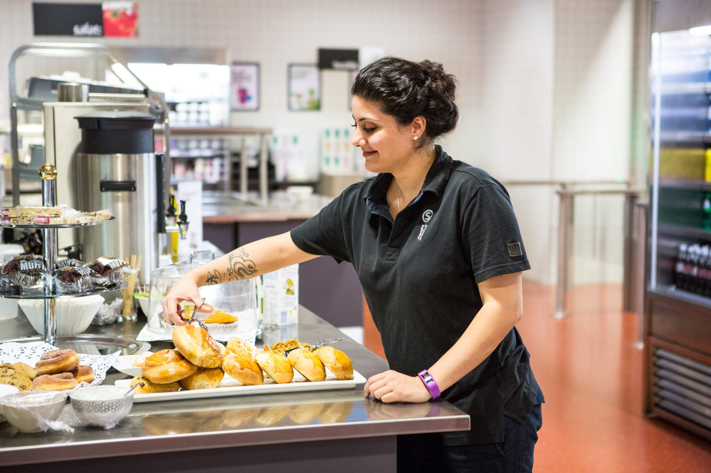

I Andrea spiseri kan du forsyne deg med varmmat, suppe, salat, pålegg og brød fra vår buffet, og betale på vekt. I tillegg finner du et bredt utvalg av wraps og smurte produkter, fristende kaker og bakevarer og gode kaffedrikker. Alt servert i store, lyse og moderne lokaler.
Åpningstider: Mandag-fredag 08:00-15:00
Annas spiseri er vårt største spisested på OsloMet Pilestredet Campus. Her tilbyr vi varmmat, salat, pålegg og brød på vekt. Vi har også et bredt utvalg av wraps og smurte produkter, kalde og varme drikker, bakevarer og meierivarer.
Åpningstider: Mandag-fredag 08:00-16:00
AHannas spiseri er samlingstedet for studentene på campus Kjeller. Her kan du forsyne deg med varmmat, suppe, salat, pålegg og brød fra vår buffet, og betale på vekt. I tillegg finner du et bredt utvalg av wraps, smurte produkter, kaker og bakevarer..
Åpningstider: Mandag-fredag 08:00-15:30
Kafe Eva har et stort utvalg av kioskvarer, ferdigpakkede salater og baguetter du kan ta med deg. Kaféen tilbyr også mat som for eksempel toast eller suppe, som kan varmes i kaféen.
Åpningstider: Mandag-fredag 08:00-15:00
På Kafe Årstiden er både menyen og interiøret tilpasset sesongen i form av råvarer, smaker og farger. Her får du sesongens varmretter og salat på vekt. Årstiden har også egen yoghurtbar, og tilbyr nysmurte baguetter, kaker og et bredt utvalg av kaffedrikker.
Åpningstider: Mandag-fredag 08:00-14:00
Ta en pause mellom forelesning og egenlesning, nyt en god kopp kaffe, litt te, påsmurt mat og kanskje en kakebit.
Åpningstider: Mandag-fredag 08:00-14:00
I kaffebaren Lillefri på Bislett får du gode kaffedrikker og te, deilige kaker og nylagede wraps og baguetter.
Åpningstider: Mandag-fredag 08:30-12:30
Olaf spiseri tilbyr buffet med varmmat, supper, pålegg og brød, hvor du betaler på vekt. Du finner også et bredt utvalg av wraps og smurte produkter i tillegg til kaker og ulike varme og kalde drikker.
Åpningstider: Mandag-fredag 08:00-15:30
Union Fyrhuset på OsloMet byr på nystekte bakevarer, sandwicher, ferske croissanter og boller rett fra ovnen. Prøv vår deilige steinovnsbakt italiensk pizza laget av vår pizzaiolo Paolo som vi synes er byens beste pizza. Vi serverer øl, vin og et stort utvalg av te og kaffedrikker.
Åpningstider: Mandag-fredag 10:00-18:00